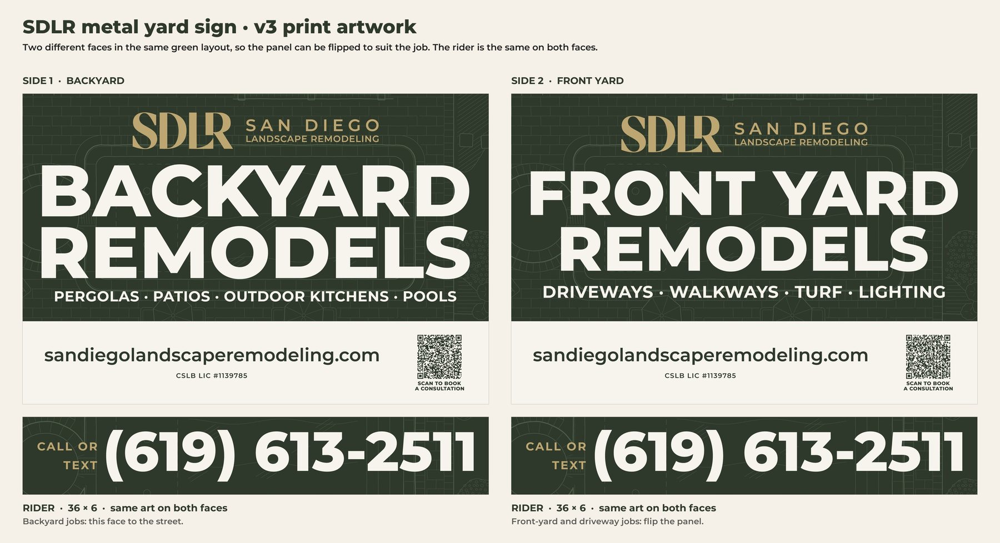
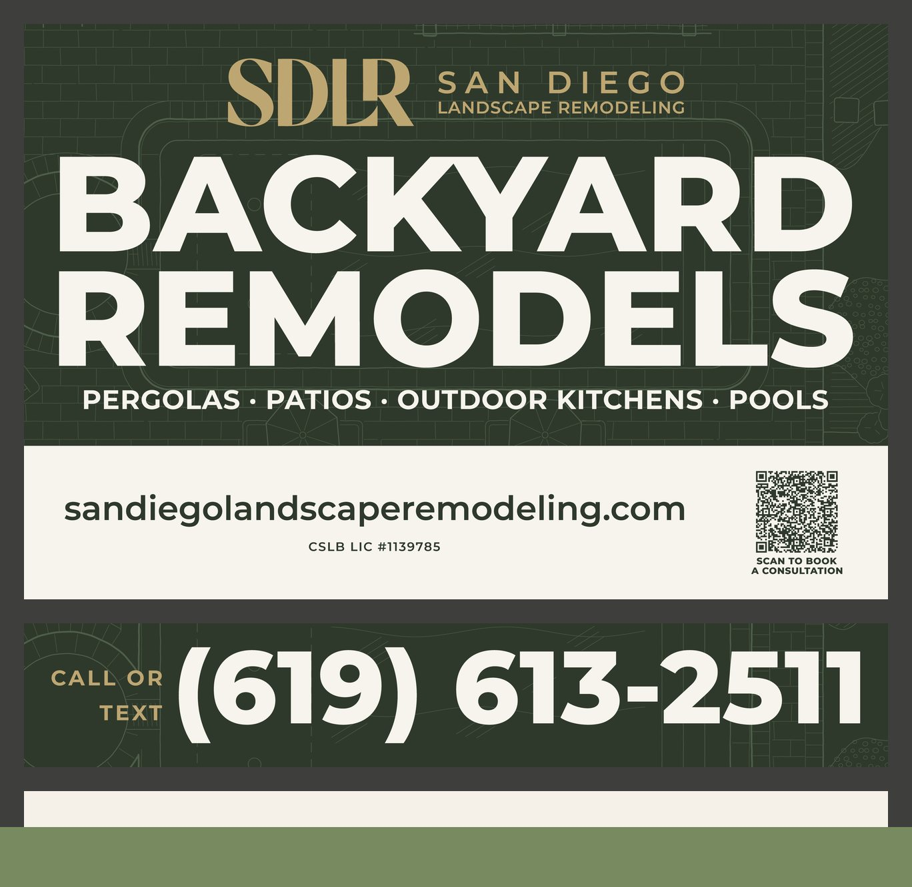
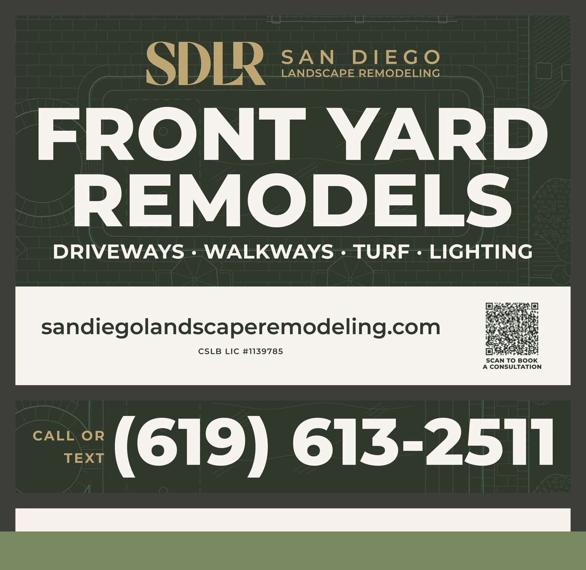
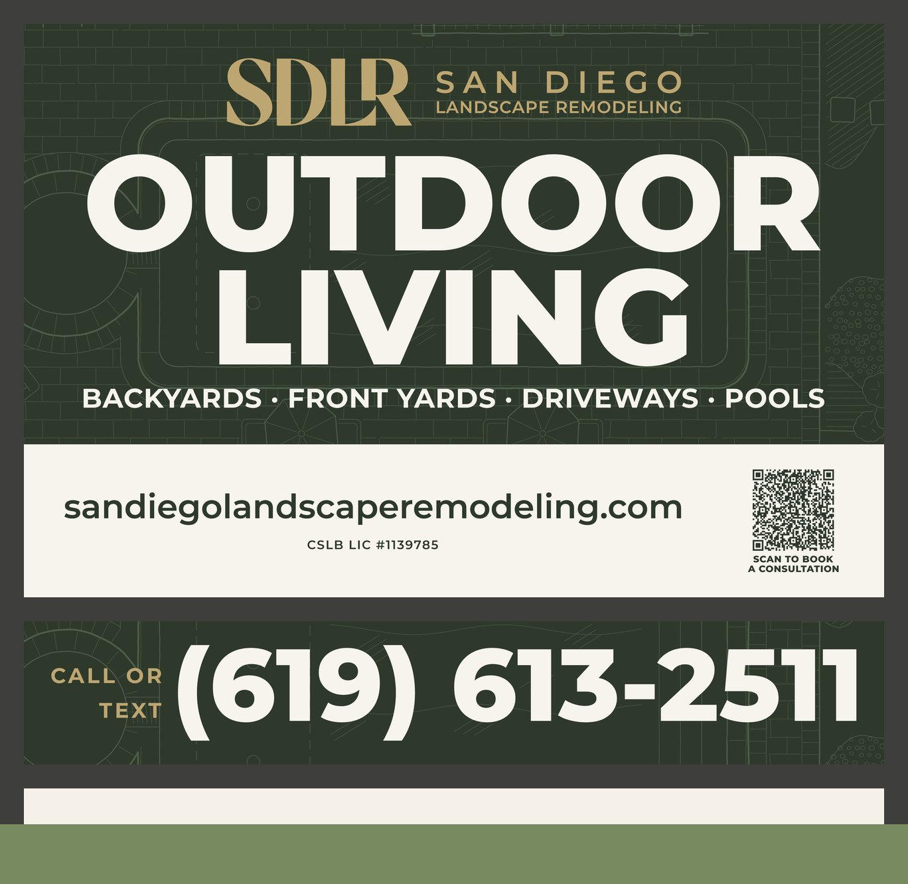

San Diego Landscape Remodeling · Metal yard sign · Version 3 · Final
Two sides, two jobs
The panel now says something different on each side, in the green layout Gio liked: BACKYARD REMODELS on one side, FRONT YARD REMODELS on the other. Flip the panel in the frame so the right side faces the street for the job. The rider doesn't change.
FinalGio left the call to Claude on November 23, 2026. To print: 2 panels (both sides) + 2 riders, one set per JustSignFrames frame. Not ordered yet.

Both panel sides, with the same rider under each.
What changed from Version 2
Two different messages. Backyards are the main business, so side 1 stays BACKYARD REMODELS (pergolas · patios · outdoor kitchens · pools). Front yards are the other money-maker, so side 2 is FRONT YARD REMODELS (driveways · walkways · turf · lighting). Each side says exactly what a neighbour is watching get built.
Green on both sides. The big green field with the cream band, the layout Gio picked.
Bigger website. 0.98 in capitals, up from 0.72 in.
The QR books a consultation. No more “What would yours cost?”: it opens the Contact page (“Book a San Diego Backyard Consultation”, by phone or on the property), captioned SCAN TO BOOK A CONSULTATION. Each side has its own tracking tag, so we'll see which side gets scanned.
Rider unchanged: CALL OR TEXT to the left of a 3 in number, as Gio wanted.
Each side in the frame

Side 1 · backyard jobs

Side 2 · front-yard and driveway jobs
In the file, not printed: OUTDOOR LIVING

OUTDOOR LIVING · backyards · front yards · driveways · pools
The catch-all version Gio mentioned. It's ready to swap in for either side, but from a car it says less than BACKYARD or FRONT YARD, so it isn't in the print set.
Frame, print spec and prices
Same as before: JustSignFrames 24 × 36 one-rider H-frame, panel 36 × 24 and rider 36 × 6 slide in, no holes; about $169 a set (panel + rider) at Signs.com. Print the panel double-sided with different art (page 1 = backyard, page 2 = front yard) and the rider double-sided with the same art. Full details on Version 1.
The layered Illustrator master (four artboards) and the README are in Drive under
02 Clients/san-diego-landscape-remodeling/assets/print-ready/yard-signs/2026-11-23-36x24-metal-rider/print-files-v3/. Versions 1 and 2 are kept.